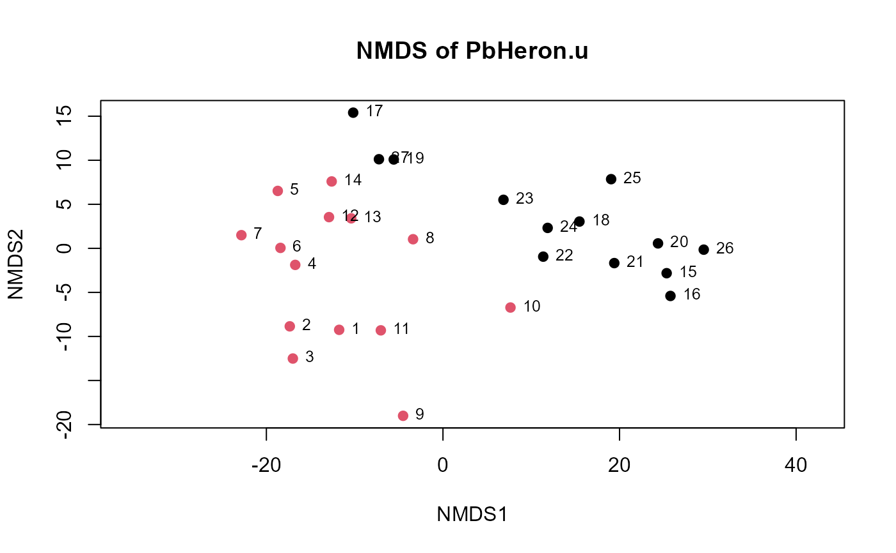

Plots an NMDS of uscores output from the uscores or uscoresi functions.
uMDS(uscor, group = NULL, title = NULL, legend.pos = "bottomleft")A data frame of uscores or ranks of uscores produced by either the uscores(...) or uscoresi(...) functions
Optional grouping variable. Sites will be represented by different colored symbols for each group.
Optional title for the NMDS graph.
For when group is specified, the location of the legend on the graph showing the colors representing each group’s data. Default is “bottomleft”. Alternatives are “topright” and “centerleft”, etc.
Prints an NMDS plot of censored data groupings based on U-scores #' @references Helsel, D.R., 2011. Statistics for Censored Environmental Data using Minitab and R, 2nd ed. John Wiley & Sons, USA, N.J.
data(PbHeron)
PbHeron.u <- uscores(PbHeron[,4:15])
uMDS(PbHeron.u)
#> Run 0 stress 0.07773434
#> Run 1 stress 0.07844726
#> Run 2 stress 0.07844726
#> Run 3 stress 0.07762542
#> ... New best solution
#> ... Procrustes: rmse 0.009284473 max resid 0.03815027
#> Run 4 stress 0.07762542
#> ... New best solution
#> ... Procrustes: rmse 1.23408e-06 max resid 4.622245e-06
#> ... Similar to previous best
#> Run 5 stress 0.07851582
#> Run 6 stress 0.07844726
#> Run 7 stress 0.07793355
#> ... Procrustes: rmse 0.0122622 max resid 0.03832684
#> Run 8 stress 0.07851582
#> Run 9 stress 0.1323279
#> Run 10 stress 0.07851582
#> Run 11 stress 0.07788834
#> ... Procrustes: rmse 0.008008286 max resid 0.03035783
#> Run 12 stress 0.07851582
#> Run 13 stress 0.1275348
#> Run 14 stress 0.07851582
#> Run 15 stress 0.1394402
#> Run 16 stress 0.07773434
#> ... Procrustes: rmse 0.009282327 max resid 0.03812179
#> Run 17 stress 0.07844726
#> Run 18 stress 0.07844726
#> Run 19 stress 0.07773434
#> ... Procrustes: rmse 0.009282803 max resid 0.03812251
#> Run 20 stress 0.0866076
#> *** Best solution repeated 1 times
#> species scores not available
# With group specific
uMDS(PbHeron.u,group=PbHeron$DosageGroup)
#> Run 0 stress 0.07773434
#> Run 1 stress 0.07851582
#> Run 2 stress 0.1396654
#> Run 3 stress 0.07851582
#> Run 4 stress 0.07762542
#> ... New best solution
#> ... Procrustes: rmse 0.009281724 max resid 0.03814271
#> Run 5 stress 0.1350415
#> Run 6 stress 0.07851582
#> Run 7 stress 0.1274958
#> Run 8 stress 0.07844726
#> Run 9 stress 0.1407938
#> Run 10 stress 0.07851582
#> Run 11 stress 0.07851582
#> Run 12 stress 0.07851582
#> Run 13 stress 0.07851582
#> Run 14 stress 0.07762542
#> ... New best solution
#> ... Procrustes: rmse 5.519193e-06 max resid 2.087329e-05
#> ... Similar to previous best
#> Run 15 stress 0.07844726
#> Run 16 stress 0.07851582
#> Run 17 stress 0.08660762
#> Run 18 stress 0.07851582
#> Run 19 stress 0.07844726
#> Run 20 stress 0.08660761
#> *** Best solution repeated 1 times
